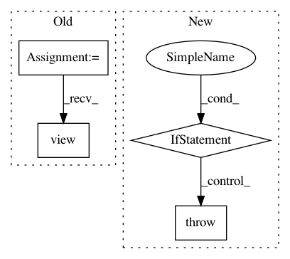

a606a68ff74ed2b2e35f7079a1570310655e4e6d,torchgeometry/core/depth_warper.py,DepthWarper,compute_projection_matrix,#DepthWarper#Any#,66
Before Change
extrinsics_src: torch.Tensor = pinhole_src.extrinsics[:, None].expand(
-1, num_cameras, -1, -1) // BxNx4x4
extrinsics_src = extrinsics_src.contiguous().view(-1, 4, 4) // (B*N)x4x4
extrinsics_dst: torch.Tensor = self._pinhole_dst.extrinsics.view(
-1, 4, 4) // (B*N)x4x4
dst_trans_src: torch.Tensor = relative_transformation(
After Change
self, pinhole_src: PinholeCamera) -> "DepthWarper":
rComputes the projection matrix from the source to destinaion frame.
if not isinstance(self._pinhole_dst, PinholeCamera):
raise TypeError("Member self._pinhole_dst expected to be of class "
"PinholeCamera. Got {}"
.format(type(self._pinhole_dst)))
if not isinstance(pinhole_src, PinholeCamera):
raise TypeError("Argument pinhole_src expected to be of class "
"PinholeCamera. Got {}".format(type(pinhole_src)))
// compute the relative pose between the non reference and the reference
In pattern: SUPERPATTERN
Frequency: 3
Non-data size: 4
Instances
Project Name: arraiy/torchgeometry
Commit Name: a606a68ff74ed2b2e35f7079a1570310655e4e6d
Time: 2019-03-04
Author: edgar.riba@gmail.com
File Name: torchgeometry/core/depth_warper.py
Class Name: DepthWarper
Method Name: compute_projection_matrix
Project Name: pyannote/pyannote-audio
Commit Name: 8ca88136436b25f27058588c939e9f04212dfa41
Time: 2018-09-18
Author: bredin@limsi.fr
File Name: pyannote/audio/embedding/models.py
Class Name: VGGVox
Method Name: forward
Project Name: cornellius-gp/gpytorch
Commit Name: 15b3563c3c7f700ee0bf23b0477527dfa5323cea
Time: 2018-06-07
Author: balandat@fb.com
File Name: gpytorch/module.py
Class Name: Module
Method Name: initialize